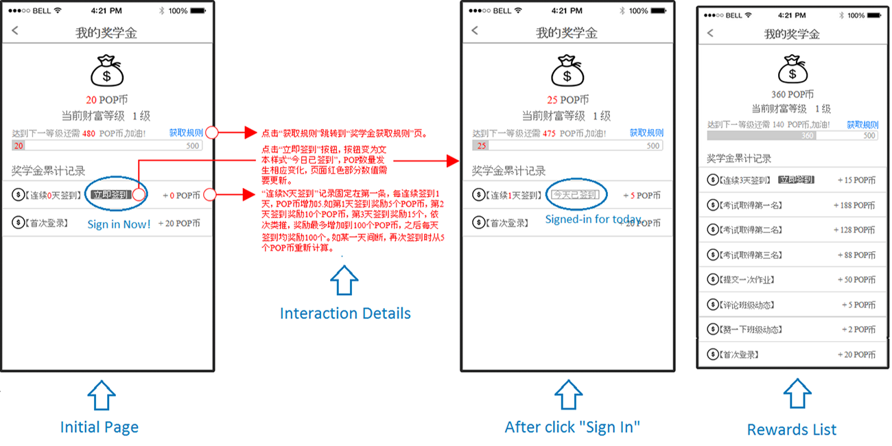
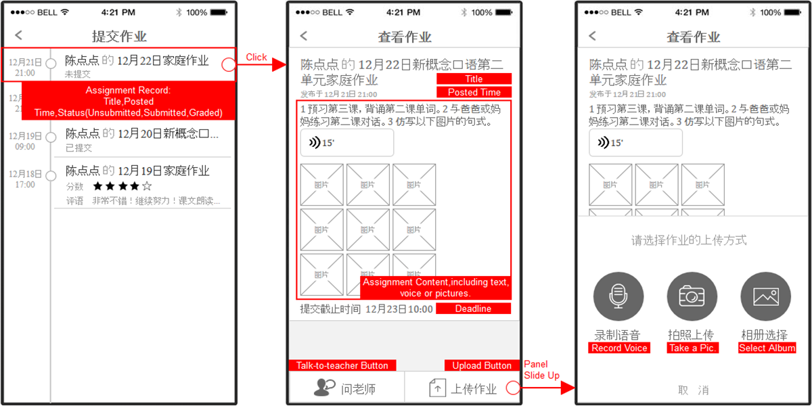
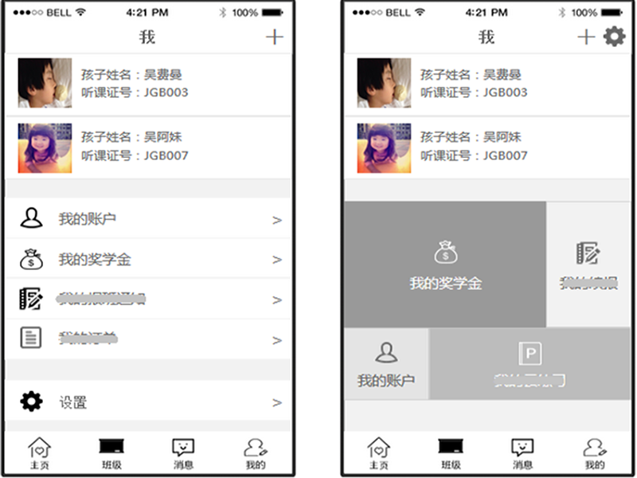

"POP Mobile" is a mobile phone app we developed for teachers and parents to offer them a better way to connect to each other. It includes two editions, For teachers and For Parents. I was in charge of the Interaction Design of the app during my working time in the UED(User Experience Design) Team, New Oriented Education&Technology Group. I analyzed the document passed by the product manager, and talked to sample users, then summarized 6 core requirements. These 6 requirements should be put high priority during the whole design process in order to meet our customers real needs when they were using our app and improve user stickiness. For example, when a dad or mom will easily find the button they need to press, and finish their tasks more comfortable, without too much complexity, since our kids' dads and moms are most likely 40 years old and may not have much technology knowledge. Friendly notifications and simple operations were very important for our app.
GO TO CHECK DESIGN DETAILS ＞ NOT INTERESTED? HAVE A LOOK AT OTHER PROJECTS ＞Parents will sometimes forget the time of class for their 6 years old kid, and for teachers, a overall view of their schedule in the following months is very useful.
Parents can take pictures, or record voice answers, and upload them. The teacher will receive submitted assignments immediately and comment on it.
Anything interesting happened in class today? Don't hesitate to record it with POP mobie. We expect both parents and teahers can share their stories.
Parents can talk to the teacher anytime by click teacher's photo if you have questions about the assignments, or want to discuss the performance of your kid, etc.
Teachers are able to record the test scores into our app, and send each kid's score to the parents with one single click, and can also share best performance in class posts.
How can we motivate parents to use our app? We set up scholarships. Parents can gain them by finishing tasks, and use them to exchange gifts.
The overall design process can be described as below.1 Do user researches : Due to the speciality of users, for teachers, we use both survey and face-to face talk to dig out their real needs; for parents, we only use survey. We also use quantitative analytic tools to give strong evidence on the "real needs", and classify different group users and scenarios. In this part, both product team and design team are involved.2 Draw Concept Prototype : Sometimes this part is completed in a meeting, where I will draw draft sketch on the whiteboard and discuss with other related teams. And sometimes, I will draw all the main pages using visio or Axure RP previously before the meeting. 3 Draw lo-fi Prototype : I will design each page layout, process, and interaction methods according the settled concept prototype. 4 Add Interaction Details : After the lo-fi prototype is settled by both the product team and the design team, I will add detailed illustrations to the prototype, including initial page, loading page, errors and exceptions, cue words, word limit, and wifi & 3G/4G network reminder, etc.The figure below is an example of the complete prototype.
I would like to use Assignment Uploading Module for Parents as an example. The left 1 figure is the first version. Parents view the detailed assignment on the previous page, and then click "Upload" button to reach this page. They can add text, voices, pictures and expressions here. However, after we talked to some parents and do some research of courses offered by POP school, we found the following facts.1 More than 60% of the courses are English, teachers ususlly require students practice and record their spoken English;2 Parents are about 40 years old. 80% of them are Moms, and 70% of Moms are housewives who are not familiar with typing on a mobile phone, so they seldom use text;3 80% of parents will take a photo of the paper work or exercise as the answer of an assignment.
Based on the above facts. I optimized the design as Figure 2. The improvement of user experience can be seen from the following aspects.1 In left 1 figure, users reach this page after view assignment details in the previous page, they may forget the assignment information, and have to return to previous page to view again, which causes inconvenience. But in left 3 figure, users click "Upload" button, and the Upload Panel will slide up on the current page;2 In left 1 figure, when user open this page, the keyboard will slide up with Upload Panel defaultly, which force users to type some text of assignment description. But actually, they normally they are not willing to do that. Thus, in left 1 figure, I move the text area to next page as a not-required field, and change the order of icon, from left to right, which is Record Voice, Take Photos, and Select Pic. This order refers to the frequency of using.3 About the Uploading Panel, I add simple text illustration under each icon, which makes the icon more easily to be understood.4 I add "Talk-to-teacher" button. If parents have some questions about the assignment, they can ask the teacher immediately.
During the design process, besides your design should confirm the current popular trend, you sometimes need to have some innovations. The new idea can be applied in interaction methods, or page layout, etc. Here I use one of the 4 main tab page, "I" page, as an example.
The left figure is the current version, as more and more modules will be added to the app, the format of module list will be very long and boring. I use the magnet with different sizes like Windows 8 to display the module name.
NOTES: First, I am very sorry the pictures are in Chinese, because our customers are Chinese, I didn't make an English version. And secondly, since some modules of the app has not been released yet, thus all the information on this page cannot be applied as any commercial use. Thanks for your understanding.
NOT INTERESTED? HAVE A LOOK AT OTHER PROJECTS ＞